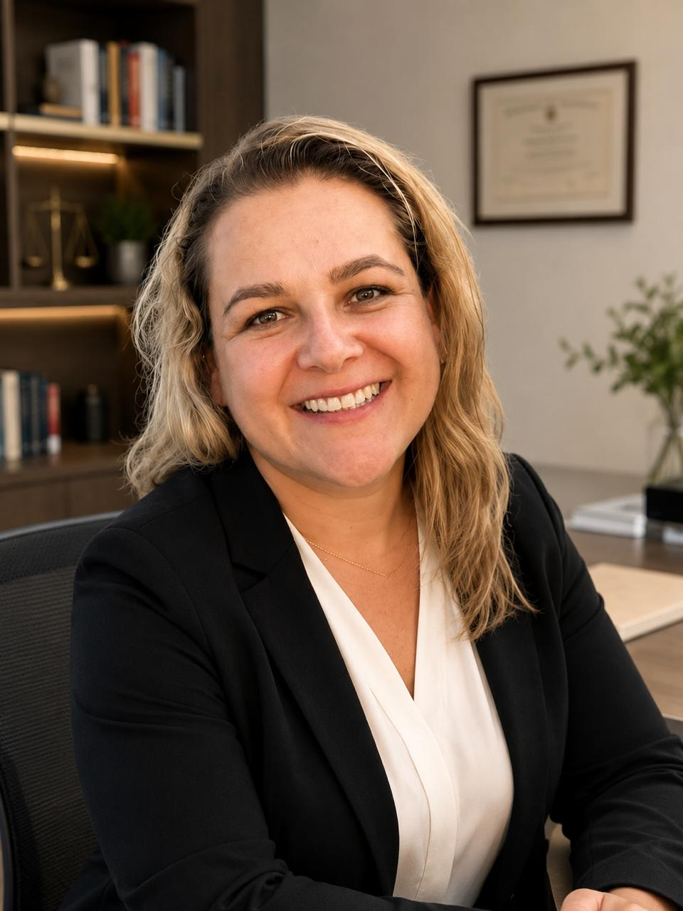

Soluções jurídicas com experiência, estratégia e atendimento personalizado.
Direito Previdenciário, Trabalhista, Imobiliário, Sucessões e Indenizações conduzidos com rigor técnico e acompanhamento próximo — do primeiro contato à decisão final.
Cada caso é conduzido com estratégia, técnica e a discrição de quem entende exatamente o que está em jogo.
A Xavier Ribeiro & Ribeiro nasceu de um princípio simples: causa séria não admite improviso. Só assumimos o que conduzimos com excelência — e cada cliente fala diretamente com quem cuida do seu caso.
Mais de 30 anos transformando conhecimento jurídico em segurança para nossos clientes.
Reconhece a sua situação?
Se algum desses momentos é o seu, podemos orientar com clareza o melhor caminho. A primeira conversa é sem compromisso.
A boa advocacia não promete resultados — ela constrói, com técnica e verdade, o melhor caminho possível para cada pessoa.Xavier Ribeiro & Ribeiro
Um caminho claro, do primeiro contato à decisão.
Conversa inicial
Entendemos a sua situação e as suas dúvidas, sem compromisso e em linguagem simples.
Análise técnica
Estudamos os seus documentos e avaliamos com franqueza o que é viável dentro da lei.
Estratégia transparente
Apresentamos caminhos, prazos e honorários com clareza, para você decidir com segurança.
Acompanhamento próximo
Conduzimos o caso com atenção a cada prazo e mantemos você informado até a decisão final.
Dúvidas comuns de quem nos procura.
Depende do seu tempo de contribuição, da idade e das regras de transição em vigor. Com uma análise do seu histórico (CNIS), conseguimos mostrar as suas opções com clareza.
Não necessariamente. Muitos atendimentos começam por telefone ou de forma digital, e boa parte da documentação é enviada online. Atendemos São José dos Campos e toda a região do Vale do Paraíba.
Os honorários variam conforme a causa e a complexidade, combinados de forma transparente antes de qualquer passo, seguindo a tabela da OAB. Explicamos tudo na primeira conversa, sem surpresas.
Não. Nenhum advogado sério pode garantir resultado — isso é vedado pela OAB. Oferecemos uma análise honesta da viabilidade e trabalho dedicado para o melhor desfecho possível dentro da lei.
Talvez. Existem prazos legais para pedir revisão. Avaliamos os seus documentos para verificar se a revisão é viável, sem promessa de aumento.
O prazo depende do tipo de causa, da via escolhida (administrativa ou judicial) e do andamento dos órgãos envolvidos. Na análise inicial, explicamos o caminho esperado para o seu caso e mantemos você informado a cada etapa.
Atualizações Jurídicas
Decisões importantes, mudanças na legislação e informações relevantes para proteger seus direitos.
Agende uma consulta para avaliarmos o seu caso.
A Xavier Ribeiro & Ribeiro
Sociedade de advogados formada por mãe e filha, com atuação em Direito Previdenciário, Trabalhista, Imobiliário, Sucessório e Inventários e Indenizações e Responsabilidade Civil, em São José dos Campos e região do Vale do Paraíba.
Um escritório feito de proximidade e técnica.
A Xavier Ribeiro & Ribeiro nasceu da união de mãe e filha em torno de um princípio simples: causa séria não admite improviso. Ao longo de mais de três décadas de atuação, construímos uma sociedade-boutique de advogados em São José dos Campos, com atuação em todo o Vale do Paraíba e unidade também em Campos do Jordão.
Atuamos em Direito Previdenciário — o direito de quem trabalhou a vida toda e quer se aposentar com tranquilidade —, Trabalhista, Imobiliário, Sucessório e Inventários e Indenizações e Responsabilidade Civil. Cada caso começa por uma análise cuidadosa e uma conversa honesta sobre o que é possível, sem promessas.
Acreditamos que advocacia de verdade se faz com informação clara e acompanhamento próximo. Aqui, você entende cada etapa, conhece os prazos e fala diretamente com a advogada que conduz o seu caso — do primeiro contato à decisão final.
Aqui, cada cliente fala diretamente com quem cuida do seu caso.Xavier Ribeiro & Ribeiro · Sociedade de Advogados
Proximidade humana, com a técnica de quem leva cada causa a sério.
Somos um escritório de relação próxima: você fala diretamente com a advogada que conduz o seu caso, entende cada etapa e decide com segurança. É essa combinação de cuidado e rigor que orienta tudo o que fazemos.
Tornar o Direito acessível e próximo — traduzir o que é técnico em decisões claras, para que cada cliente entenda exatamente o que está em jogo e decida com segurança.
Ser, no Vale do Paraíba, um escritório-boutique de referência em advocacia previdenciária, trabalhista, imobiliária e de família, reconhecido pela proximidade, pela ética e pelo rigor técnico.
Atenção individual
Cada caso é único e recebe análise dedicada. Entender a história do cliente — e não apenas o processo — orienta a melhor estratégia. Não existe solução de prateleira.
Clareza em cada etapa
Explicamos prazos, possibilidades e honorários com transparência, em linguagem acessível. Você sempre sabe em que pé está o seu caso, sem juridiquês.
Compromisso ético
Atuação pautada pela ética e pelo Estatuto da Advocacia. Trabalho sério e franqueza sobre o que é possível, sem promessas de resultado.
Um escritório completo, com técnica em cada área.
Atuamos de forma técnica e dedicada em Direito Previdenciário, Trabalhista, Imobiliário, Sucessório e Inventários e Indenizações e Responsabilidade Civil. Cada área recebe o mesmo cuidado: análise aprofundada, estratégia clara e acompanhamento próximo, do início ao fim.
O Direito Previdenciário segue sendo uma das nossas maiores especialidades — analisamos cada CNIS com profundidade e orientamos o momento certo de agir. E, seja qual for a sua área, conduzimos o seu caso com a mesma proximidade e o mesmo rigor técnico.
Presença no Vale do Paraíba.
Atendemos São José dos Campos e toda a região, com unidade também em Campos do Jordão — sempre mediante agendamento.
São José dos Campos
Rua Pascoal Moreira, 48 · Jardim Nova América · SJC/SP.
Campos do Jordão
Av. Januário Miraglia, 659 · Sala 13 — Prédio Pátio Dubieux · Campos do Jordão/SP.
Agende uma consulta para avaliar o seu caso.
O que fazemos
Atuação especializada nas áreas que mais impactam a vida, o patrimônio e os direitos das pessoas. Escolha uma área para conhecer nossa forma de atuação.
 Aposentadoria e benefícios do INSS
Aposentadoria e benefícios do INSSDireito Previdenciário
Aposentadorias, revisão de benefícios, auxílios e defesa de direitos junto ao INSS.
Ver área → Seus direitos no trabalho
Seus direitos no trabalhoDireito Trabalhista
Verbas rescisórias, horas extras, reconhecimento de vínculo e demais direitos trabalhistas.
Ver área → Contratos e patrimônio imóvel
Contratos e patrimônio imóvelDireito Imobiliário
Contratos, regularização de imóveis, locação e questões relacionadas ao seu patrimônio.
Ver área → Patrimônio e família
Patrimônio e famíliaDireito Sucessório e Inventários
Inventários, partilhas, testamentos e planejamento sucessório.
Ver área → Reparação de danos
Reparação de danosIndenizações e Responsabilidade Civil
Danos materiais, morais e estéticos, acidentes e falhas na prestação de serviços.
Ver área →O que ajuda a agilizar a análise do seu caso.
Não se preocupe se faltar algo — reunimos o que for preciso ao longo do caminho. Ter à mão o que você já possui adianta a avaliação.
Documentos pessoais
RG, CPF e um comprovante de endereço atualizado.
Extrato previdenciário (CNIS)
Para casos de aposentadoria, revisão ou benefício do INSS. Ajudamos a obter, se você não tiver.
Carteira de trabalho e contracheques
Para causas trabalhistas, ajudam a comprovar vínculo, função e valores.
Documentos do caso
Cartas, decisões, contratos, comprovantes e tudo que se relacione à sua situação.
Conte o seu caso e mostramos os próximos passos.

Direito Previdenciário
O direito de quem contribuiu a vida toda. Ajudamos você a entender se já pode se aposentar, qual a melhor opção e como buscar revisões e benefícios junto ao INSS, na via administrativa ou judicial.
Cuidado com o direito de quem trabalhou a vida toda.
Analisamos o seu histórico (CNIS) com critério, mostramos as suas opções com clareza e conduzimos cada etapa de perto — sem promessas, com estratégia.
Aposentadorias
Por idade, tempo de contribuição, especial ou por invalidez. Analisamos o seu CNIS e orientamos o melhor caminho.
Revisão de Benefício
Quem já se aposentou pode ter direito a um valor maior. Avaliamos a viabilidade dentro dos prazos legais.
Auxílios e BPC/LOAS
Auxílio-doença, auxílio-acidente e o Benefício de Prestação Continuada para quem tem direito.
Benefício negado
Pedido indeferido ou cessado pelo INSS? Avaliamos o motivo e os caminhos para reverter a decisão.
Vamos avaliar o seu caso previdenciário.

Direito do Trabalho
Seus direitos durante e depois do contrato de trabalho, com análise da sua situação e dos seus documentos — para receber o que é devido.
O que é seu, por direito.
Verificamos contracheques, carteira e o histórico do contrato para identificar verbas e direitos que podem não ter sido pagos corretamente.
Verbas Rescisórias
Aviso prévio, férias, gratificação natalina, FGTS e multa. Verificamos se você recebeu tudo o que era devido.
Horas Extras e Jornada
Horas extras não pagas, intervalos suprimidos e jornada irregular.
Reconhecimento de Vínculo
Trabalho sem registro, pejotização indevida ou função diferente da anotada.
Assédio e Rescisão Indireta
Assédio moral, condições abusivas ou descumprimento do contrato pelo empregador.
Vamos analisar os seus direitos trabalhistas.

Direito Imobiliário
Orientação em contratos de compra, venda e locação de imóveis, regularização de bens, usucapião e questões condominiais, com segurança jurídica em cada etapa.
Segurança jurídica para o seu patrimônio imóvel.
Analisamos contratos e documentos com atenção aos detalhes, para que a compra, a venda ou a locação do seu imóvel aconteça com clareza e sem surpresas.
Contratos de Compra e Venda
Elaboração e análise de contratos, due diligence imobiliária e acompanhamento até a escritura.
Locação de Imóveis
Contratos de locação, despejo e questões entre locador e locatário, residenciais ou comerciais.
Regularização e Usucapião
Regularização de imóveis, escrituras e ações de usucapião para consolidar a propriedade.
Questões Condominiais
Orientação em conflitos e obrigações relacionadas a condomínios e áreas comuns.
Vamos avaliar o seu caso imobiliário.

Direito Sucessório e Inventários
Orientação em inventários judiciais e extrajudiciais, partilhas, testamentos, planejamento sucessório, regularização de bens e prevenção de conflitos familiares.
Organizar o patrimônio com serenidade.
Conduzimos cada etapa com sensibilidade e técnica, buscando o caminho mais rápido e menos custoso para a família, dentro da lei.
Inventário Judicial e Extrajudicial
Havendo consenso, o inventário pode ser feito em cartório, de forma mais rápida.
Partilha de Bens
Divisão de imóveis, contas e outros bens entre os herdeiros, conforme a lei.
Testamento e Planejamento
Organizar em vida a destinação do patrimônio, evitando conflitos futuros.
Regularização de Heranças
Bens em nome de quem já faleceu e inventários parados. Documentação em ordem.
Vamos cuidar do inventário com você.

Indenizações e Responsabilidade Civil
Atuação em pedidos de indenização por danos materiais, morais e estéticos, acidentes, falhas na prestação de serviços, problemas contratuais e situações que gerem prejuízos ao cliente.
Reparar o que não deveria ter acontecido.
Analisamos com honestidade se há fundamento para indenização e qual o melhor caminho — judicial ou por acordo — para o seu caso.
Danos Morais e Materiais
Situações que causaram dor, constrangimento ou prejuízo financeiro.
Acidentes
Acidentes de trânsito, no trabalho ou por falha de terceiros.
Direito do Consumidor
Cobranças indevidas, produto ou serviço defeituoso e problemas com empresas.
Negativação Indevida
Nome inscrito sem motivo, dívida já paga ou registro irregular.
Vamos avaliar o seu direito à reparação.
A nossa equipe
Duas sócias à frente de cada causa — uma sociedade de mãe e filha — e uma equipe dedicada a cuidar de cada etapa, do primeiro contato à decisão final.
Há mais de três décadas atuando com igual domínio técnico em todas as áreas do escritório, do Previdenciário ao Imobiliário, unindo experiência, visão estratégica e um atendimento verdadeiramente próximo a cada cliente.
Sócia do escritório, atua na condução estratégica de processos judiciais e consultivos em todas as áreas de atuação da banca, com rigor técnico, versatilidade e atendimento próximo a cada cliente.
Quem cuida de cada detalhe.

Especialista em processos administrativos junto ao INSS, conduz cada requerimento de benefício com agilidade, precisão técnica e atenção a cada detalhe.
Atua na pesquisa jurídica, no acompanhamento processual e na organização de cada caso, contribuindo com rigor técnico e dedicação em cada etapa.
Responsável pela organização de documentos, prazos e pelo atendimento diário, assegurando que cada caso avance com ordem, agilidade e tranquilidade para o cliente.
Fale com quem vai cuidar do seu caso.
Fale com o escritório.
Conte o que está acontecendo e mostramos os próximos passos. Atendimento próximo e sem juridiquês.
Atendimento mediante agendamento, em ambas as unidades.
Notícias que impactam os seus direitos
As últimas decisões, alterações na legislação e novidades sobre aposentadorias, benefícios do INSS, direitos trabalhistas e tudo que pode impactar o seu caso — em linguagem simples.
Artigo
Política de Privacidade e Cookies
Como o escritório Xavier Ribeiro & Ribeiro coleta, utiliza e protege os seus dados pessoais, em conformidade com a Lei Geral de Proteção de Dados (Lei nº 13.709/2018 — LGPD).
Última atualização: junho de 2026
A sua privacidade é levada a sério. A Xavier Ribeiro & Ribeiro — Sociedade de Advogados (“escritório”, “nós”) está comprometida com a proteção dos dados pessoais de clientes, potenciais clientes e visitantes deste site. Esta Política explica, de forma transparente, quais dados coletamos, como e por que os utilizamos, com quem os compartilhamos e quais são os seus direitos, em conformidade com a Lei Geral de Proteção de Dados (Lei nº 13.709/2018 — LGPD) e demais normas aplicáveis.
1. Quem é o controlador dos dados
O controlador dos dados pessoais tratados por meio deste site é o escritório Xavier Ribeiro & Ribeiro — Sociedade de Advogados, com atuação em São José dos Campos e região do Vale do Paraíba/SP. Para qualquer questão relativa à proteção de dados, utilize os canais indicados ao final desta Política.
2. Quais dados pessoais coletamos
Dados que você nos fornece: ao preencher o formulário de contato ou nos chamar pelo WhatsApp, podemos coletar nome, telefone, e-mail, a área jurídica de interesse e as informações que você decidir compartilhar sobre a sua situação.
Dados coletados automaticamente: ao navegar no site, podem ser coletados dados técnicos como endereço IP, tipo de dispositivo e navegador, páginas visitadas e data/hora de acesso, por meio de cookies e tecnologias semelhantes.
Recomendamos que você evite enviar dados sensíveis ou detalhes sigilosos do seu caso por formulário ou mensagem antes de estabelecida a relação profissional.
3. Para que utilizamos os dados e com qual base legal
Tratamos os seus dados pessoais apenas para finalidades legítimas e específicas, com fundamento nas bases legais da LGPD:
- responder a contatos, agendar consultas e prestar as informações solicitadas (procedimentos preliminares a contrato e legítimo interesse);
- prestar os serviços advocatícios contratados e acompanhar o andamento do caso (execução de contrato);
- cumprir obrigações legais, fiscais e perante a OAB (cumprimento de obrigação legal);
- aprimorar o site, a segurança e a experiência de navegação (legítimo interesse);
- quando aplicável, nas hipóteses em que você manifestar o seu consentimento.
4. Cookies e tecnologias semelhantes
Cookies são pequenos arquivos armazenados no seu dispositivo que permitem o funcionamento do site e a melhoria da sua experiência. Podemos utilizar:
- Cookies necessários: essenciais para o funcionamento básico do site;
- Cookies de desempenho e análise: ajudam a entender, de forma agregada, como o site é utilizado;
- Cookies de funcionalidade: lembram preferências de navegação.
Você pode gerenciar ou desativar cookies nas configurações do seu navegador. A desativação de alguns cookies pode afetar o funcionamento de partes do site.
5. Compartilhamento de dados
Nós não vendemos os seus dados pessoais. O compartilhamento ocorre apenas quando necessário: com prestadores de serviço que operam o site e as ferramentas de comunicação (sob obrigações de confidencialidade); para cumprimento de obrigação legal, regulatória ou de ordem judicial; e para o exercício regular de direitos em processos.
6. Sigilo profissional
As informações relacionadas a casos e clientes são protegidas pelo sigilo profissional do advogado, garantido pelo Estatuto da Advocacia (Lei nº 8.906/1994) e pelo Código de Ética e Disciplina da OAB, além das proteções previstas na LGPD.
7. Armazenamento, segurança e retenção
Adotamos medidas técnicas e organizacionais razoáveis para proteger os dados contra acessos não autorizados, perda ou alteração. Os dados são mantidos apenas pelo tempo necessário às finalidades informadas e ao cumprimento de obrigações legais e prazos prescricionais.
8. Os seus direitos como titular
Nos termos do art. 18 da LGPD, você pode, a qualquer momento, solicitar:
- a confirmação da existência de tratamento e o acesso aos seus dados;
- a correção de dados incompletos, inexatos ou desatualizados;
- a anonimização, o bloqueio ou a eliminação de dados desnecessários ou tratados em desconformidade com a lei;
- a portabilidade dos dados e a informação sobre o compartilhamento;
- a revogação do consentimento e a oposição a tratamento, nas hipóteses cabíveis.
9. Como exercer os seus direitos
Para exercer os seus direitos ou esclarecer dúvidas sobre esta Política, fale com o escritório pelo WhatsApp (12) 99743-4181 ou pelo e-mail adv.xavierribeiro@gmail.com. Responderemos no menor prazo possível, observada a legislação aplicável.
10. Alterações desta Política
Esta Política poderá ser atualizada periodicamente para refletir mudanças legais ou operacionais. A versão vigente estará sempre disponível nesta página, com a respectiva data de atualização.
11. Legislação e foro
Esta Política é regida pela legislação brasileira. Fica eleito o foro da comarca de São José dos Campos/SP para dirimir eventuais questões, com renúncia a qualquer outro, por mais privilegiado que seja.